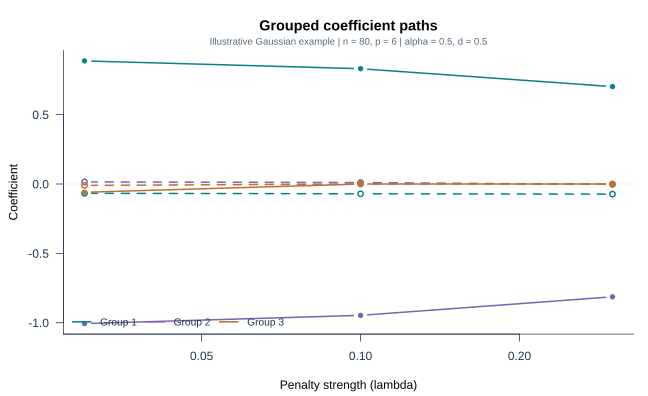
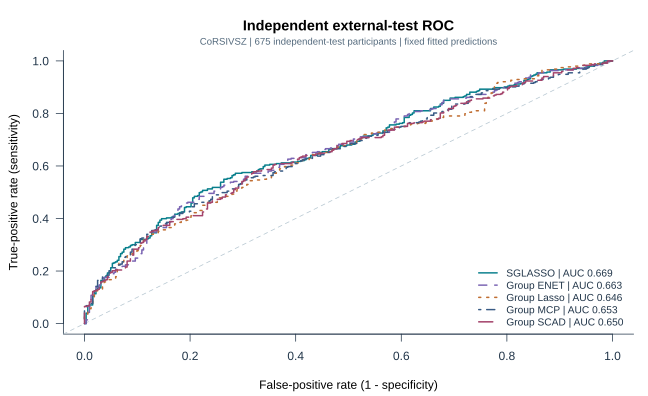
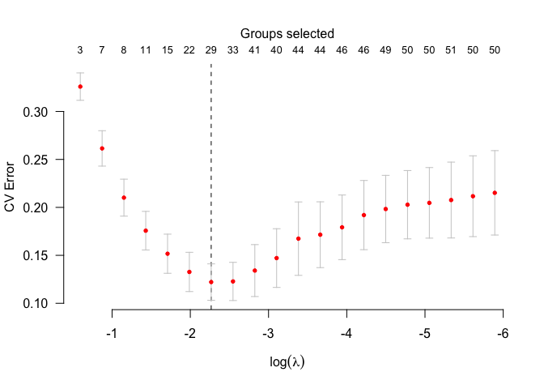
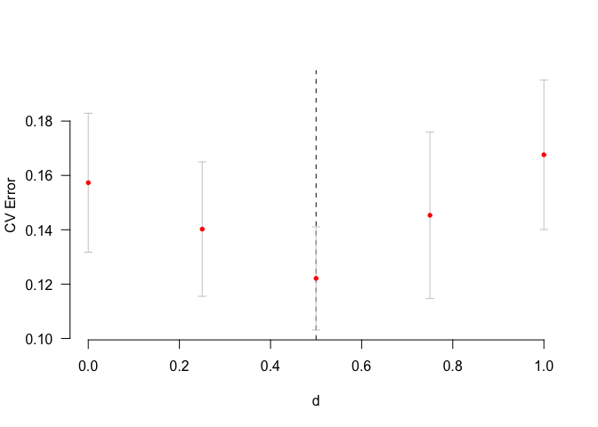

Example gallery: illustrations and external evidence
Source:vignettes/articles/gallery.Rmd
gallery.RmdGrouped coefficient paths

This is the small Gaussian quick-start example: seed 19, 80 synthetic observations and six predictors in three groups. The horizontal axis is penalty strength on a log scale; the vertical axis is the coefficient value on the original predictor scale. It demonstrates the interface, not comparative performance or true-support recovery.
Independent external-test ROC curves

These curves use the already fitted, fixed predictions for the
675-person external CoRSIVSZ cohort. They are not from a new refit,
random train/test split or resampling run. All five curves use the same
line width. AUC measures ranking, not accuracy at a selected decision
threshold. SGLASSO’s observed score does not by itself establish
multiplicity-adjusted superiority. The extra d = 0 audit
variant remains in the run code, not this five-method display. Full
uncertainty is reported in the manuscript, not inferred from the visual
separation of curves.
Existing Gaussian documentation plots


These original package-documentation graphics are retained unchanged. They illustrate the GenAtHum example, not the new binary analysis or a new benchmark. The historical generating example is shown below and is not executed when building the site:
library(sglasso)
data(GenAtHum, package="sglasso")
set.seed(2025)
model_CV <- cv.sglasso(GenAtHum$X, GenAtHum$y, GenAtHum$group,
nlambda=20, nd=5, nfolds=5, alpha=0.4)
plot(model_CV)
plot(model_CV, type.tun="d")Historical figure provenance does not establish bit-for-bit agreement with every future package version. The original article scripts retain their own study settings.
Reproduction code
tools/render_sglasso_gallery.R draws the first figure from the documented tiny example and the ROC figure from a checksum-verified completed external run. It refuses to overwrite existing output files. The ROC rendering step requires the completed external outputs; these are not bundled with the code. It never reruns the external models or bootstrap.